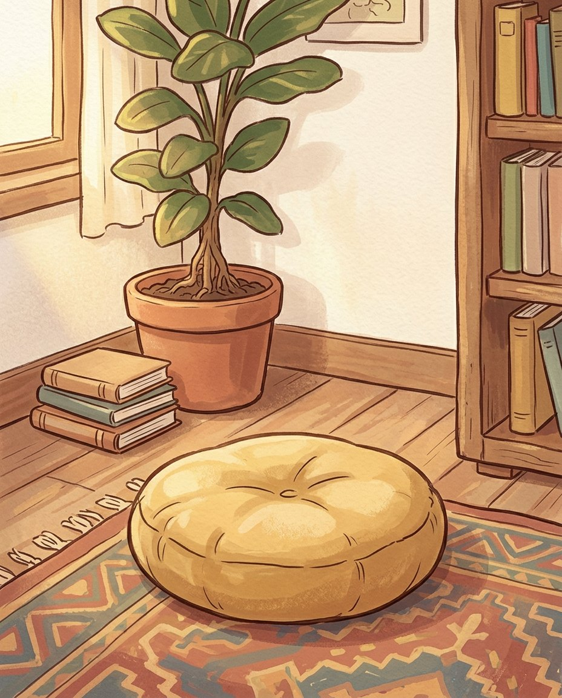
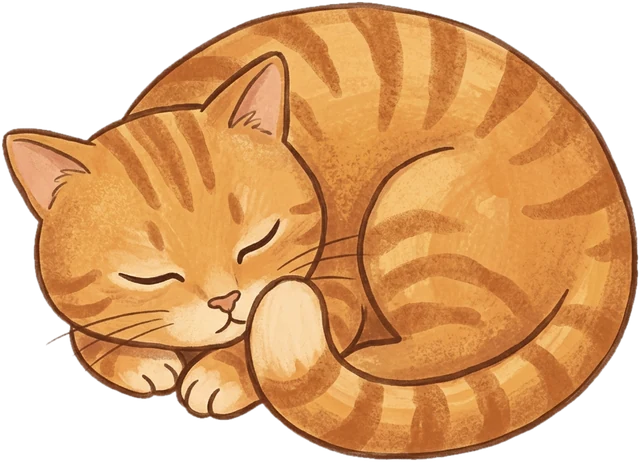
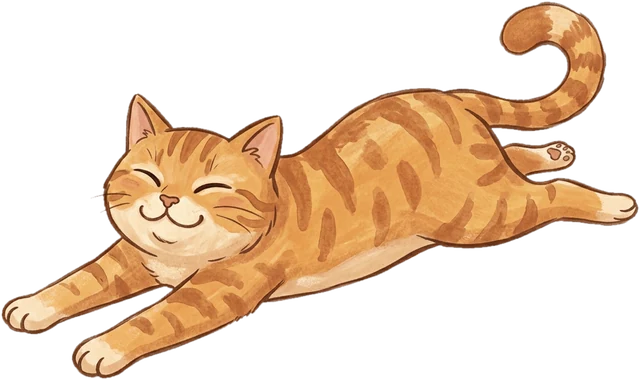
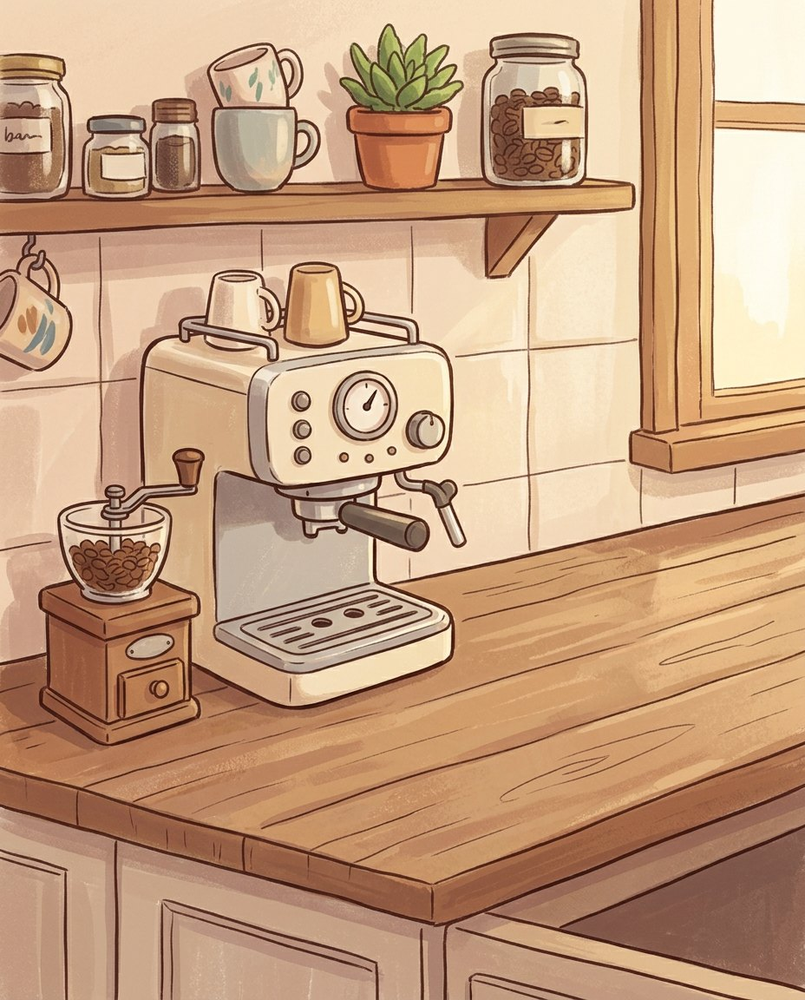
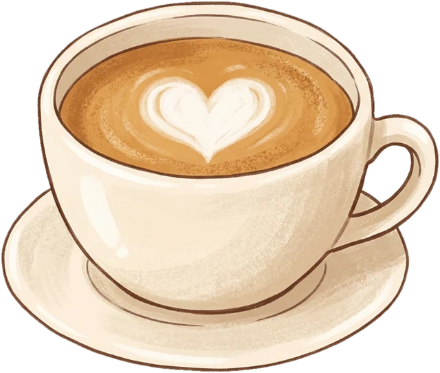
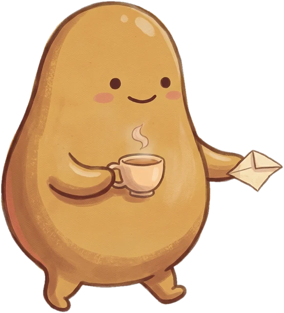
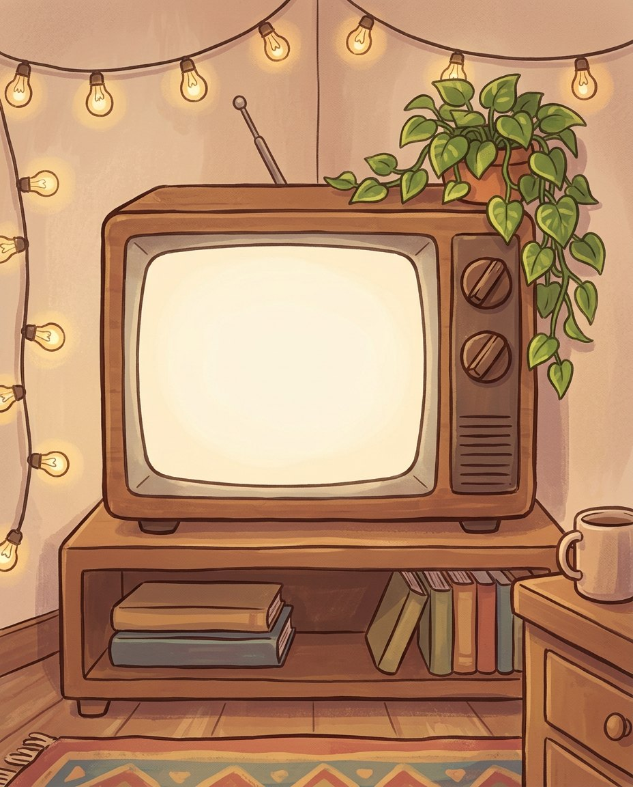
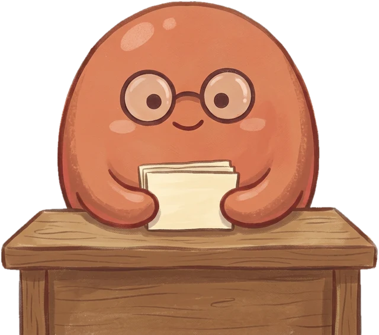

Three quiet corners to wander to between questions. Nothing here keeps score.







Orders close at 8pm for the next morning.
Cancel with one tap, any time before 8pm.
Their usual loaf sits first, one tap away.
